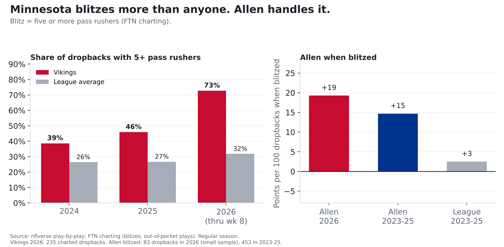
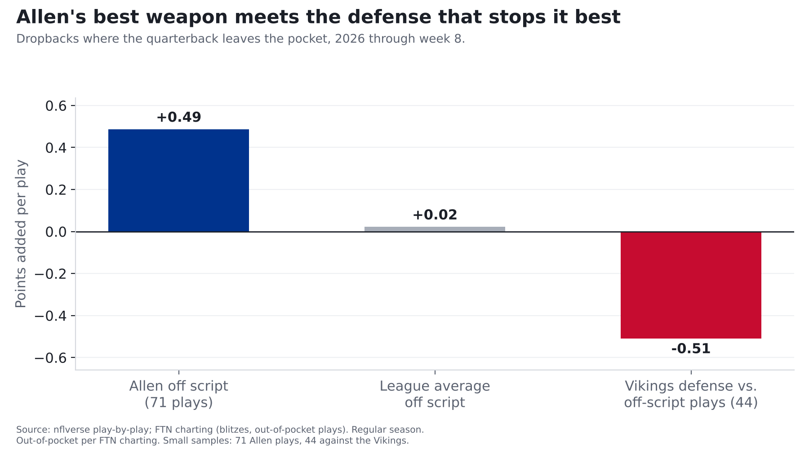
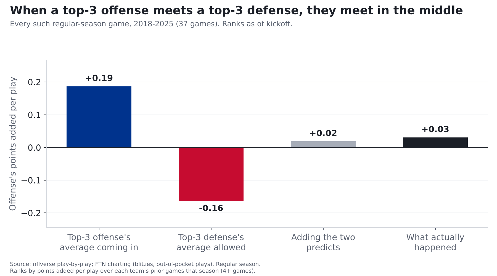

Josh Allen and the Bills offense vs. the NFL's best defense
The Vikings send five or more rushers on 73% of dropbacks, more than any defense by a mile. Josh Allen has been one of the best in the league against it.
Finding: Monday night is the best offense in football against the best defense, and the Vikings play defense like no one else: they send five or more pass rushers on 73% of dropbacks, the most in the NFL by a mile (league average 32%). Josh Allen has been one of the league's best quarterbacks against the blitz (5th of 33). The collision to watch is Allen's improvising: his plays outside the pocket have been worth +0.49 points each, and no defense has been better against those plays than Minnesota's (-0.51). Both of those are small samples.
Bills at Vikings, Monday Night Football, Nov. 9, 8:15 p.m. ET, U.S. Bank Stadium (indoors). Both teams have played 7 games. Numbers count every play unless noted. The companion story covers the Vikings' offense with Carson Wentz and our predictions for the game.

How we measure it: points added per play
Yards alone don't say much: 6 yards on 3rd-and-5 keeps a drive alive, 6 yards on 3rd-and-10 usually means a punt. So we measure every play by how many points it adds to or takes away from the drive.
The source: the NFL's official play-by-play, cleaned and published free by the nflverse project, plus FTN's play-by-play charting, which records things the official feed doesn't, like how many defenders rushed and whether the quarterback left the pocket.
The reasoning: a drive is worth a certain number of points depending on where it stands. Across every NFL play from 2018 to 2026, 1st-and-10 at your own 25 is worth about 1.1 points; at the opponent's 25, about 4.2. On 3rd-and-8, a quarterback who converts adds about +2.4; one who gets sacked loses about 1.9.
The math: what the drive was worth after the play, minus what it was worth before, is that play's value. Average it over every play and you get points added per play. A positive number is good for the offense.
How we checked it: it tracks scoring. The Bills add +0.18 points per play (league average 0.00) and score 3.08 points per drive, both 1st. The Vikings allow -0.17 per play and 1.20 points per drive, both 1st.
Strength on strength
| Bills offense | Vikings defense | League average | |
|---|---|---|---|
| Points added per play | +0.18 (1st) | -0.17 allowed (1st) | 0.00 |
| Per pass play | +0.30 (1st) | -0.21 allowed (1st) | +0.06 |
| Per designed run | +0.02 (6th) | -0.11 allowed (9th) | -0.08 |
| Points per drive | 3.08 (1st) | 1.20 allowed (1st) | 2.09 |
| Big plays (20+ yard passes, 10+ yard runs) | 13.4% of plays (1st) | 8.6% allowed (14th) | 8.7% |
| Sacks | 5.5% of pass plays (11th) | 10.6% made (1st) | 6.3% |
| Turnovers | 2.6% of plays (26th) | 2.7% forced (4th) | 1.9% |
| Third downs converted | 45% (5th) | 30% allowed (2nd) | 40% |
| Red-zone trips ending in a touchdown | 71% (4th) | 38% allowed (1st) | 64% |
Ranks: 1st is best for that unit. Take out blowout garbage time and the Bills' offense ranks 3rd and the Vikings' defense 2nd.
Two places Buffalo has an edge on paper: big plays, where the Bills lead the league and Minnesota is merely 14th, and the run game (6th vs. a run defense that's 9th). The place Minnesota has the edge: turnovers. The Bills give the ball away on 2.6% of plays (26th), and the Vikings take it away at the 4th-best rate.
Is Minnesota's defense really this good, or is it the schedule?
Mostly real. The Vikings have faced a below-average set of offenses (their opponents' average rank is 18.9; 5 of 7 rank 17th or worse). But when we compare each game to what that opponent does against everyone else, Minnesota is still narrowly 1st (just ahead of Tampa Bay): it has held offenses 0.18 points per play below their own averages, vs. 0.17 for Tampa Bay.
| Week | Opponent | Opponent's offense this season | Last season |
|---|---|---|---|
| 1 | GB | 17th | 4th |
| 2 | CHI | 8th | 8th |
| 3 | TB | 26th | 19th |
| 4 | MIA | 23rd | 22nd |
| 5 | NO | 22nd | 27th |
| 7 | IND | 30th | 9th |
| 8 | DET | 6th | 7th |
2 of their 7 opponents have a top-10 offense this season.
The blitz
We count a blitz as five or more pass rushers. Most defenses do it on about a third of dropbacks. Minnesota does it on almost three of every four (73%), and has led the league three years running (39% in 2024, 46% in 2025; league 26% and 27%). The next-most aggressive defense this season blitzes 44% of the time. A Vikings blitz isn't bigger than anyone else's (5.36 rushers on average; league 5.35). It just comes far more often.
Both versions work. Against the blitz, Minnesota allows -0.19 points per dropback (171 plays); when it doesn't blitz, -0.24 (64 plays, a small sample), so far they've been about as good, maybe slightly better, when they sit back. Around the league, blitzes this season have produced 0.00 per dropback and sacks on 8.3% of them; Minnesota's blitzes get sacks 11.1% of the time.
Allen is the kind of quarterback that approach is built to test, and so far he has passed:
| Allen when blitzed | Dropbacks | Points added per dropback | League average |
|---|---|---|---|
| 2026 | 83 (small sample) | +0.19 (5th of 33 QBs with 40+) | 0.00 |
| 2023-25 | 453 | +0.15 | +0.03 |
Like most quarterbacks, he's better when he isn't blitzed (+0.36 this season; 10 of 33 did better when blitzed). He starts from such a high level that even when blitzed he's 5th of 33.
The off-script collision
The biggest change in Allen's 2026, from our Josh Allen story: he's leaving the pocket on 30% of dropbacks (league 20%), and those plays are working, at +0.49 points each (71 plays; league +0.02).
Minnesota is the toughest test for that so far this season. Quarterbacks who have left the pocket against the Vikings have lost 0.51 points per play, the best mark in the league (44 plays, a small sample). With garbage time removed it's -0.46, 2nd (40 plays).

We checked this a second way, with plain success rate (did the play keep the offense on schedule?) instead of points. It tells the same story: Allen's off-script plays succeed 55% of the time, the league's 42%, and Minnesota allows 32%. The samples are small on both sides, so this is a matchup to watch, not a verdict.
Deep shots
The Bills throw deep (20+ yards in the air) on 16% of their passes (4th; league 11%), and those throws have been worth +0.79 points each (9th; 32 throws, a small sample; league +0.42). Minnesota's short-pass defense is the league's 2nd-best, but deep throws against it have still been worth +0.18 each (10th-best; 22 throws, a small sample). A defense that sends extra rushers leaves fewer defenders back, which is where Buffalo's big-play offense lives.
What usually happens when the best meet the best
Since 2018, a top-3 offense has met a top-3 defense 37 times in the regular season. Coming in, those offenses averaged +0.19 points per play and those defenses allowed -0.16. In the game itself, the offense averaged +0.03, close to what you get by simply adding the two strengths together (+0.02). The offense fell short of its own average 73% of the time. Against everyone else, those same top-3 offenses averaged +0.13.

The Bills have been the top-3 offense in 6 of those games:
| Season | Game | Bills' average coming in | Bills in the game |
|---|---|---|---|
| 2022 | Week 13 vs. NE | +0.11 | +0.17 |
| 2022 | Week 18 vs. NE | +0.12 | +0.10 |
| 2023 | Week 15 vs. DAL | +0.12 | +0.19 |
| 2024 | Week 15 vs. DET | +0.20 | +0.48 |
| 2025 | Week 12 vs. HOU | +0.17 | -0.16 |
| 2025 | Week 16 vs. CLE | +0.15 | +0.06 |
What we're watching
- The blitz vs. Allen. If Minnesota's pressure gets home, Buffalo's offense is in for a long night. If Allen beats it the way he has all season, the Bills' deep game is open behind it.
- Allen on the move. It's his best weapon this year and Minnesota's best counter. Those plays could decide the night.
- Turnovers. The one area where the Bills' offense is below average meets a defense that takes the ball away.
- Our three predictions for this game are in the companion story on the Vikings' offense with Carson Wentz.
For the stat-heads
- Points added = EPA (nflverse/nflfastR expected points). Team splits:
src/metrics/team.py, regular season through week 8,pass == 1 or rush == 1, EPA not null, no kneels/spikes/two-point tries/no-plays. Pass play = dropback (sacks and scrambles included). Designed run excludes scrambles. Explosive = pass 20+ or rush 10+ yards. League averages are means of team values. - Garbage-time filter (WP 10-90%): Bills offense +0.15 (3rd), Vikings defense -0.14 (2nd).
- Opponent quality: average 2026 offensive rank of Minnesota's seven opponents 18.9.
- Opponent adjustment: same method as
src/metrics/adjust.pyleague_adjusted_rank, pinned to week 8 (each game's EPA/play allowed minus the opponent's EPA/play in its other games, play-weighted). Vikings -0.179 (1st); pass defense -0.269 (1st). - Blitz = FTN
n_pass_rushers >= 5on charted dropbacks, every season. FTN changedn_blitzersin 2026: it now equalsn_pass_rushers - 4on 97% of 2026 charted dropbacks, son_blitzers > 0means different things before and after (Vikings under the old flag: 44%, 51%, 73% for 2024-26). The 2025-to-2026 jump (46% to 73%) rests on one source; no second check is possible until 2026 NFL participation data is published. Vikings 2026 sack rate: 11.1% blitzing, 9.4% not. Allen 2026 blitz rate faced 35%; sacked on 7.2% of blitzed dropbacks. Drop from not-blitzed to blitzed: Allen 0.17, league 0.08; 23rd-smallest of 33. - Off script = FTN
is_qb_out_of_pocket; Allen by gsis id (00-0034857), dropbacks =COALESCE(passer_player_id, rusher_player_id). Vikings face out-of-pocket plays on 19% of dropbacks (20th-highest rate; league 20%): 17% when blitzing, 23% when not. Garbage-time filtered (WP 10-90%): -0.46 (2nd, 40 plays). - Deep = air yards 20+ on true pass attempts (no sacks). Minnesota's short-pass (under 20 air yards) EPA allowed -0.07; league +0.12.
- Best vs best: ranks by EPA/play over prior games only; a week counts once every team has played 4+ games. 2018-2025 regular season, 3,148 team-games eligible; additive prediction = offense avg + defense avg - league average over the same prior weeks. #1 offense vs. #1 defense: 5 games, offense averaged +0.14.
- 2026 NFL participation data (pressure, coverage) has not been published, so this story doesn't use pressure for 2026.
- Data pinned through 2026 week 8.